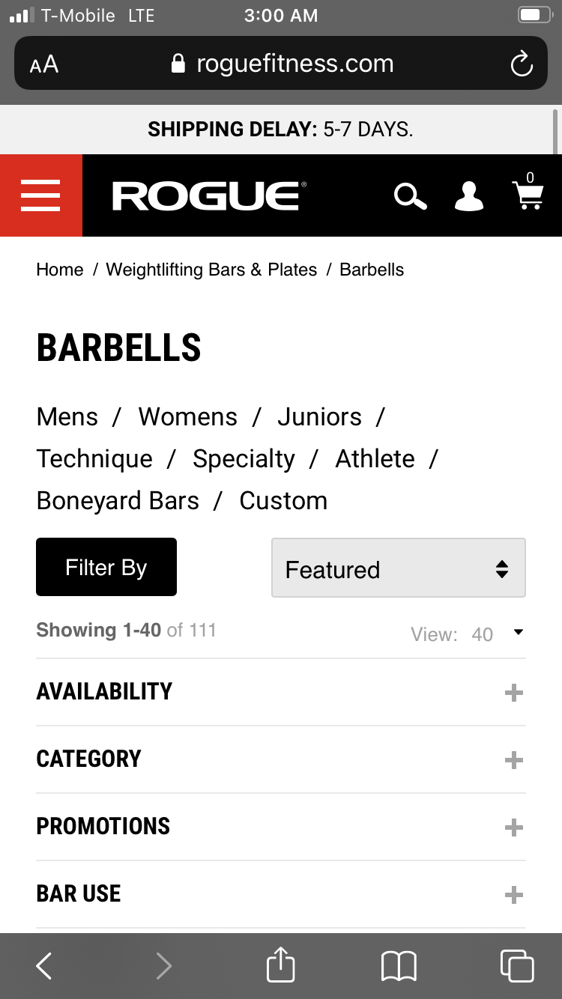
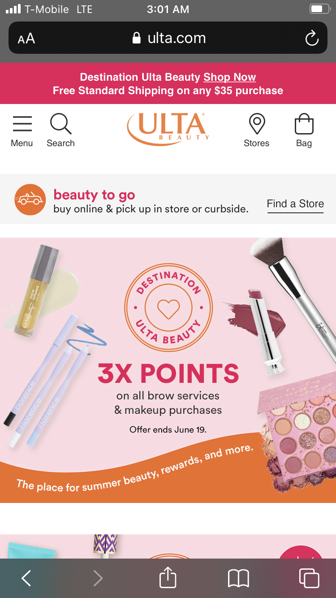
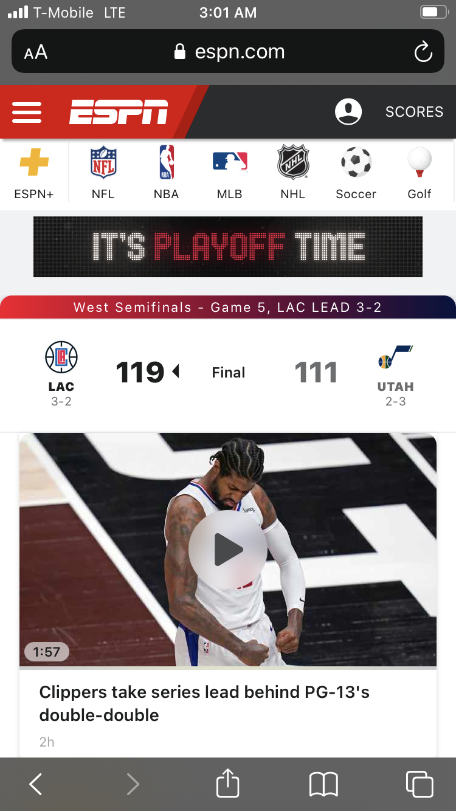

Hicks Law
Rogue Fitness
roguefitness.com The designer implemented the principle of contrast for the airline’s website. From the colors, the white typeface standing clearly on the blue background. Conversely, the dark font also standing out on the white background of the main section of the page. Contrast in colors makes the audience easily read the message of the page.
Different sizes of the font contrast with each other. This will make the user recognize sections of the website immediately. However, the designer only uses a sans-serif font which is not contrasting, but most of the websites are designed that way.
Contrast
Ulta
ulta.com I have spent a good amount of time on this website buying gifts for my wife and I have always noticed how bright and colorful it was. The design of this website creates contrast with the products on top of a white background. The menus all use bright and excited colors such as pink and orange which lead you to important parts of the page.
Bright and colorful style is likely due to the customers they want to attract and the merchandise they sell. Cosmetics often come in bright vibrant colors and it just makes sense the website would match that.
Visual Hierarchy
ESPN
espn.com Elements on websites which are the same type are set with equal sizes and shapes. Garb Athletics exemplified how hierarchy of the items control the vision of their audience by setting the elements on various sizes. The tool to create customize uniform is the largest item on the page. Second, the video showing examples of their products. Third, the text that says, “All-Inclusive Uniforms”. Fourth, the logo of the company. Fifth, the category or menu bar to view more options.
Depending how big the size of the item, you can direct the users where to point their attention using the visual hierarchy principle.